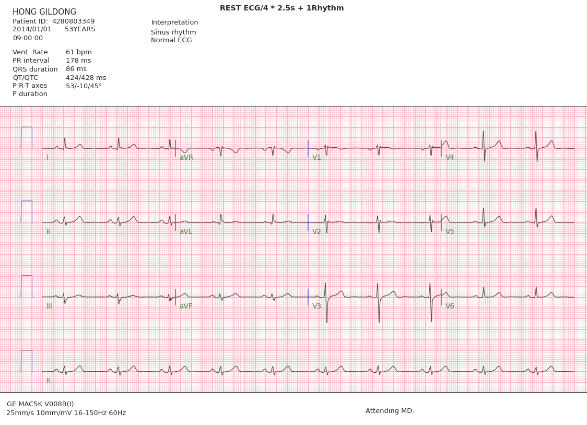

렌더 파이프라인
결과지 그대로의 이미지
IntroECG 정규화 상수로 z-score 를 mV 로 되돌리고, 25 mm/s · 10 mm/mV 격자에 3×4 순차 배열 + 10초 rhythm strip(II) 로 그립니다. 측정 블록·판독문·기기 라인까지 실제 결과지 배치를 따릅니다.
EchoNext · GE MAC5K layout · 100,000 ECGs
출판된 결과지 사진을 실측해 재현한 ECG 이미지 100,000장과, 심초음파 12개 라벨·tabular metadata 로 학습 데이터를 만들고, 브라우저에서 바로 돌아가는 추론 화면까지 배포하는 프로젝트입니다.

렌더 파이프라인
IntroECG 정규화 상수로 z-score 를 mV 로 되돌리고, 25 mm/s · 10 mm/mV 격자에 3×4 순차 배열 + 10초 rhythm strip(II) 로 그립니다. 측정 블록·판독문·기기 라인까지 실제 결과지 배치를 따릅니다.
라벨 세트
LVEF ≤ 45%, LVWT, AS/AR/MR/TR/PR ≥ moderate, RV dysfunction, pericardial effusion, PASP ≥ 45, TR max ≥ 3.2 m/s, 그리고 이를 묶은 SHD composite(52.2%).
배포
결과지 사진을 넣으면 라벨 확률을 돌려주는 화면을 목표로 합니다. 1차는 정적 웹(ONNX Runtime Web), 2차는 같은 모델을 PC 앱·APK 로 감싸는 구조입니다.
원본 공개 파형은 (N, 1, 2500, 12) float64 — 10초 · 250 Hz · 12유도입니다. 여기에 리드별 정규화 상수(mean/std, 0.1–99.9 percentile clip)를 역적용해 mV 로 되돌린 뒤, 실물 결과지 축척(4.0752 px/mm)에 맞춰 렌더합니다.
렌더 결과는 train 72,475 · val 4,626 · test 5,442 · no_split 17,457 로 나뉘고, metadata.csv 가 이미지 경로·라벨·tabular 를 한 행으로 묶습니다.
학습은 로컬 GPU 없이 Kaggle 노트북에서 진행하고, 이 사이트는 결과와 추론 화면만 담습니다.
| 항목 | 값 |
|---|---|
| 해상도 | 1124 × 814 px (103.5 dpi) |
| 파일 형식 | PNG · palette 128 |
| 장당 크기 | 약 45 KB |
| 전체 용량 | 약 4.3 GB |
| 렌더 속도 | 0.20 s/장 (4 worker) |
| 총 소요 | 약 5시간 |
| 단계 | 상태 | 비고 |
|---|---|---|
| 렌더러 구현·검증 | 완료 | mV↔z 왕복오차 2.4e-7, 결과지 헤더 실측 재현 |
| 100k 배치 렌더 | 완료 | Kaggle 노트북 v4, split 별 파일 수 확인 |
| Metadata EDA | 완료 | 이 사이트의 EDA 탭 (코드 산출, 수기 입력 없음) |
| 웹 표면 | 완료 | 표지·EDA·데모·전략 (이 페이지) |
| 이미지 supervised 학습 | 예정 | Kaggle GPU 노트북, 환자 단위 split 재구성 필요 |
| 브라우저 추론 | 예정 | ONNX Runtime Web + 사진 전처리 |